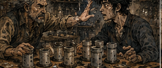
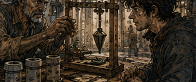

Pell had improved the regulator without me. I disliked this for almost three seconds. Then I remembered that was the point. He stood at the far end of his workbench with six ceramic housings arranged in a row. Same clay. Same copper contacts. Same little etched channel running around the waist. If I had seen them a month ago, I would have called them identical.
They were not. That was why the brass-and-glass Tere reference set sat open beside them. Pell pointed at the first regulator.
"Tell me." I looked at him.
"Tell you what?"
"Which is best."
"Without testing?"
"Yes."
"Impossible."
"Good." He pointed at the second.
"That one." I stared.
"You just asked me."
"I changed my mind."
"Based on?"
"Your face."
"My face did nothing."
"It did a thing." Antonius was spreading. This was becoming a public-health problem. I picked up the first regulator. Pell slapped my hand. I stared at him. He stared back.

"What?"
"Don't touch them."
"Why?"
"Because I spent two days making them."
"I paid for one."
"You paid for one day."
"Then I can touch half."
"No." I put my hands behind my back.
"Fine. Explain."
Pell did not explain. He picked up the first regulator with wooden tongs and seated it into a crude testing frame. That was new. Not the regulator. The frame. Two uprights. A crosspiece. Copper contacts. A little ceramic cradle. A weighted arm hanging from a pin. Ugly. Functional. I leaned closer.

"You made a fixture."
Pell's expression tightened.
"I made something to stop holding the fucking things in my hand."
"That's a fixture."
"It's wood."
"Wood can be a fixture."
"It's scrap."
"Scrap can be a fixture."
"It took twenty minutes."
"Many excellent things do."
Pell pointed at the wall. I did not leave. He knew I would not. He turned the regulator's input screw a quarter turn. The weighted arm lifted. Not much. He marked the height on a strip of paper fixed behind it. Then he removed the regulator. Second. Same input. The arm lifted. Nearly the same height. Third. Same. Fourth. Slightly lower. Fifth. Almost exactly first.
Sixth. Higher. Pell looked at me. I looked at the marks. The spread was narrow. Not perfect. Not even close to what late Arwick Works would eventually produce. But compared with the regulators we had tested before?
"Fuck."
"Yes."
"Again."
"I already did it six times."
"Again."
"No."
"Pell."
"No."
"You cannot show me this and then expect..."
"I can. Watch." He began removing the test frame from the bench. I experienced actual pain.
"Stop."
"No."
"One more run."
"No."
"Different order."
"No."
"Warm them first."
"No."
"Cold."
"No."
"Increase input."
"No."
"Decrease input."
"No."
"Put a load on..."
"No." I stared at him. He smiled. It was not a pleasant smile.
"You understand how irritating this is?"
"Yes."
"Good." He set the frame on a shelf. I looked at the six regulators.
"What changed?"
"Process."
"Which part?"
"Several."
"Which?"
"Mine."
I laughed. That was fair. Annoying. Fair. I had brought him the Tere set. I did not own what he learned from it. Knowing that intellectually and feeling it while six improved regulators sat three feet away were different experiences. I wanted to know everything. Clay composition. Firing time. Copper thickness. Etch depth. Cooling. Assembly sequence. Which reference pieces he used.
Whether he had altered the regulator or merely controlled the process. I could feel my mind reaching for the entire workshop. Pell saw it.
"No."
"I haven't asked."
"You inhaled."
"People inhale."
"Not like that." I closed my mouth. Pell wiped his hands on a cloth.
"First day I tried to make the regulator match the reference."
"Reasonable."
"No."
"Apparently."
"I changed too much." I smiled. He pointed at me.
"Don't."
"I didn't say anything."
"You were going to."
"I was going to say I have recently learned something similar."
"I don't care."
"Good story."
"No." He leaned against the bench.
"I changed the clay. Then the winding. Then the firing. Then the etch. Then I had no idea which thing mattered."
"Yes."
"I made six worse."
"Excellent."
"Fuck you."
"Failure with information."
"They didn't have information. That's the point."
"Ah." He picked up a regulator from a box under the bench. Cracked. The copper winding had darkened.
"I was changing the object because the object was wrong."
"Wasn't it?"
"Maybe. But then I used Tere's set on the same regulator three times." I waited.
"Three readings."
"Different?"
"Enough."
That was interesting.
"The test."
"The test." I looked at the ugly wooden frame on the shelf. Pell followed my eyes.
"I was holding the input lead by hand."
"Pressure variation."
"Maybe."
"Angle."
"Maybe."
"Contact area."
"Maybe."
"Heat from your fingers."
"Greg."
"Sorry."
"No, you're not."
"No." He crossed his arms.
"So I stopped making regulators."
That sentence landed. Pell Arwick, who had spent weeks obsessed with improving a regulator, had stopped making regulators.
"What did you make?"
"The fixture."
I looked at it again. Twenty minutes, he had said. Probably a lie. Not malicious. Craftsmen routinely forgot to count the hour spent staring at a problem before touching wood.
"Then?"
"Measured the same regulator twenty times."
"Spread?"
"Smaller."
"How much?"
He showed me a page. Numbers. Pell's handwriting was worse than mine, which I considered an important moral victory. I read them. The spread had dropped by more than half. Not because the regulator improved. Because the measurement did. I felt something warm move through my chest. This was not future knowledge. Not mine. Not Tere's, exactly. Pell had found it.
"You separated measurement error from object variation."
"I stopped holding the fucking wire."
"Same thing."
"No."
"Technically..."
"No." I grinned. He continued.
"Then I made three regulators the same way."
"Same batch?"
"Same clay. Same firing. Same winding count."
"Results?"
"Still spread."
"Then?"
"Changed nothing except winding tension."
"How did you control it?" He pointed at another object. A stick. A spool. A hanging weight. I stared. Pell became defensive.
"It's temporary."
"It's beautiful."
"It's two pieces of wood."
"Three."
"Fuck off."
The copper wire ran from a spool, over a small peg, beneath a hanging weight, then toward the winding mandrel. Constant tension. Crude.
Good.
Very good.
"You built a tensioner."
"I hung a weight on a string."
"That is what a tensioner is if you are poor."
He laughed despite himself. I looked around the workshop. The roof still sagged. The shelves still held too many half-finished jobs. A cracked crucible sat beside a bucket. There was clay under Pell's fingernails and a burn on one thumb. Nothing had transformed. That mattered. I had been expecting breakthroughs to arrive with visible grandeur because I remembered the future result.
ARWICK.
Factories. Precision. A name stamped on devices used in half the civilized world. But perhaps this was what the beginning actually looked like. A man stopped holding a wire. Then hung a weight from a string. History was insulting.
"What did the tensioner do?"
"Reduced spread again."
"How much?" Pell showed me. I read. Then reread.
"That's real."
"I know."
"Not enough."
"I know."
"But real."
"I know." I looked at the six regulators.
"Which variable next?" Pell smiled. Not because he needed my answer. Because he already had one.
"Firing."
"Temperature?"
"Position." I blinked.
"In the kiln?"
"Back runs hotter."
"How do you know?"
"Broken glaze." I followed his glance toward a shelf of ceramic scraps. Of course.
"You're mapping the kiln."
"I'm putting tiles in it."
"You're mapping the kiln."
"Don't make it sound expensive."
"It will become expensive eventually."
"Get out." I laughed. He handed me a regulator. I looked at it.
"You said don't touch."
"That one you can."
"Why?"
"It's yours." I stopped.
"What?"
"Your reference set. Your paid day. Your regulator."
"I don't need a regulator."
"Neither did I two weeks ago."
Fair. I turned it in my fingers. Small. Warm from the workshop. Nothing about it looked important.
"What does it regulate?"
"Low flow."
"How low?"
"Enough for a lamp. Small heater. Simple ward trigger. Maybe a measuring instrument."
"Maybe?"
"Depends on the instrument."
My mind opened twelve doors. Pell watched. Then pointed at the regulator.
"One." I looked at him.
"One what?"
"Thing."
"That's not how objects work."
"It is today."
"You can't tell me I can only use a regulator for one thing."
"I can tell you not to come back tomorrow with seven projects." I held the regulator up.
"You made this because I brought you Tere."
"I made this because I made it."
There it was. I lowered my hand.
"Yes."
Pell's expression shifted. Not softened. Less armed.
"Yes," I repeated.
He had made it. Tere had made references. I had recognized them. Antonius had sold them. Pell had built the fixture, controlled the tension, noticed the kiln. The regulator existed because several things met. That distinction felt increasingly important.
"How much would you sell this for?"
"That one?"
"Yes."
"Two silver."
"That's insulting."
"It's a regulator."
"It's a historically significant regulator."
"It's the fifth one."
"Even better."
"Two silver."
"Fine. I own two silver."
"No. You own the regulator."
"Equivalent."
"No."
"Mostly."
"No." I put it carefully into my pocket. Then immediately took it out.
"What?"
"I should not put precision equipment loose beside coins." Pell stared.
"Growth."
"Stop saying that."
"I didn't."
"Your face did."
Again. Everyone was learning my face. I needed a new face. I wrapped the regulator in cloth.
"What are you doing with it?" Pell asked.
"I don't know."
"Then don't." I looked at him. He smiled. Antonius was definitely spreading.
"I have magic training."
"Good."
"That wasn't an answer."
"It was a destination."
"I hate all of you."
"Who is all?"
"Hessa. Antonius. You."
"Sounds like a you problem."
Unfortunately, that was becoming difficult to dispute. Hessa had three cups on the floor when I arrived. Not drinking cups. Practice cups. Wooden. Cheap. One upside down. One on its side. One upright. I stopped in the doorway.
"No." Hessa looked up.
"No what?"
"Whatever that is."
"You haven't seen it."
"I see cups."
"Very observant."
"I know you."
"You've known me for weeks."
"Long enough to distrust household objects." She pointed to the floor.
"Sit." I sat. I did not take the regulator out. This was discipline. Hessa looked at my pocket.
"What?"
"Nothing."
"You looked."
"I have eyes."
"Antonius does that."
"Who?"
"No one." She pushed the upright cup toward me.
"Barrier."
"Where?"
"Inside." I looked into the cup. Then at her.
"No."
"Why?"
"That's stupid."
"Good."
"You're agreeing?"
"Explain why." I picked up the cup. It was about the width of my palm.
"Line of sight is poor. Space is constrained. If you want the Barrier inside without touching the cup, placement has to be precise."
"Yes."
"I can't see the plane."
"Yes."
"I'll have to infer it."
"Yes."
"Failure could push against the cup."
"Yes."
"Which loads the channel."
"Potentially."
"You're trying to make me stop thinking small means safe." Hessa smiled. I disliked when teachers smiled. It meant the lesson had already happened and I was merely catching up.
"Fine." I set the cup down.
"Mana."
"No." I looked at her.
"What?"
"Tell me the shape first."
"Coin."
"No."
"Smaller."
"No."
"Then what?"
"Tell me what the spell needs to do."
"Exist inside the cup."
"Why?"
"Because you are cruel."
"Greg."
I looked at the cup. What did the spell need to do? Nothing. That was the problem. I had been thinking about Barrier as an object. Make plane. Place plane. Hold plane. But Hessa had been forcing intention and shape together. If the goal was merely to form a Barrier inside the cup, the plane did not need to be coin-sized. It needed to fit.
"Horizontal."
"Why?"
"Easy reference from the rim."
"Size?"
"Smaller than the inner diameter."
"How much smaller?" I almost said enough. That was not a measurement. I looked.
"Finger width from the wall."
"Which finger?" I stared at her. She stared back.
"You're enjoying this."
"Which finger?"
"Mine."
"Which one?"
"Middle."
"Good." I held up my hand.
"Approximately that much clearance."
"Height?"
"Halfway."
"How will you know?" I looked at the outside of the cup. No marks.
"You removed the marks."
"There were never marks."
"Liar." Hessa smiled. I picked up the cup again. Weight. Height. I could measure with my finger.
No.
That gave me an external reference. Could place my thumb against the outside. But she would probably object.
"Can I mark it?"
"No."
"Can I touch the outside while casting?"
"No."
"Can I measure it first?"
"Yes."
I used my fingers. Cup height. Interior depth. Rim thickness. Crude. Then set it down. Halfway. Plane. Clearance. No contact. I closed my eyes. Hessa said, "Why?"
"Less distraction."
"Open them."
"Why?"
"Because eventually the world will be visible while you cast."
"Rude."
I opened them. Mana. The channel in my wrist responded. Better than last week. Still small. Still embarrassing compared with memory. I moved mana. Compressed. Shaped. The plane wanted to appear where I looked. Top of cup.
No.
Inside. My old instincts tried to reach through space as if placement were trivial. Current body disagreed. I adjusted. Barrier flickered. The cup jumped. Hessa said, "Stop." I released.
"Wall?"
"Probably."
"Probably?"
"Wall."
"Where?"
"Near side."
"Why?"
"I placed from my eye to the target instead of relative to the cup."
"Again." I looked at her.
"Again?"
"Yes."
"This is a historic moment."
"No."
"You usually say stop."
"You stopped when I said stop." I sat very still. Hessa frowned.
"What?"
"Nothing."
"You are smiling."
"No."
"You are."
"Again."
Second attempt. I used the rim. Not as target. Reference. Cup exists in space. Barrier exists inside cup. The difference mattered. Mana. Shape. Place. A flicker. The cup did not move.
"Stop." I released.
"Was it in?"
"Yes."
"Did it touch?"
"I don't know."
"Excellent." Hessa stared.
"Sorry. Good."
"Again."
Third. The Barrier formed. A heartbeat. Gone. The cup stayed still. My wrist warmed. Not pain. Warmth. Hessa reached for it.
"I'm fine." She took my wrist anyway.
"Yes."
"I told you."
"People who need checking frequently say that."
"Antonius also..."
"Who is Antonius?" I paused. I had mentioned him before. Hadn't I? Maybe not by name.
"Lender."
Hessa's fingers stopped.
"Your lender?"
"Technically."
"What does technically mean?"
"It means yes."
"How much do you owe?"
"Less than before."
"Greg."
"Several gold." She released my wrist.
"Several?"
"Yes."
"How many?"
"That is a surprisingly personal question."
"You pay me."
"Correct."
"I would like that to continue."
"Ah. Professional concern."
"How many?" I considered lying. Not because the amount mattered. Because I disliked being observed from multiple directions. Hessa saw the consideration.
"Don't."
"Five originally."
Her eyebrows rose.
"Interest complicated it."
"Of course it did."
"I've paid some."
"How?"
"Work."
"What work?"
"Warehouse. Collections. Appraisals. Problems."
"Problems?"
"He gives me problems." Hessa looked at the cup. Then at me. Something connected. I disliked that.
"What?"
"Nothing."
"That's my line."
"Again."
Fourth attempt.
Better.
Not stronger. Placed faster. I felt the plane appear where I intended with less searching. A tiny correction. Hessa dropped something. I reacted. Barrier.
Wrong.
The wooden bead struck my shoulder. I stared at it on the floor. Hessa said, "What happened?"
"You cheated."
"What happened?"
"I switched tasks."
"From?"
"Placement."
"To?"
"Defense."
"Why did that matter?"
Because defense had forty years attached to it. My body did not. The instant an object moved toward me, old Greg arrived with a complete answer. Barrier. Angle. Reinforcement. Counterposition. Too much. All at once. The spell had collapsed under instructions my channels could not execute.
"I asked for the old spell."
Hessa's face sharpened.
"What does that mean?"
Shit.
"The version in my head."
"From where?"
"Practice."
"You said you barely used magic before."
"I've studied."
"Where?"
"Books."
"Which?"
"Many."
"Name one." I looked at her. She looked back. This was becoming inconvenient.
"Hessa."
"Greg."
"I know things I can't explain cleanly."
"That is not an answer."
"No."
"Are you dangerous?"
The question surprised me. Not because the answer was difficult. Because she asked it without fear. Professional. Direct. I thought about it.
"Yes." Hessa did not move.
"To me?"
"Not intentionally."
"That is a terrible answer."
"It's the accurate one."
"To yourself?"
"Absolutely." She exhaled through her nose.
"At least you know that."
"Recently."
"What are you hiding?"
"A lot."
"Crimes?"
"Some."
Her eyes narrowed.
"Old crimes."
"How old are you?"
Fuck. There are moments when a conversation offers several exits and every one is on fire. I could lie. I had lied to better interrogators. I could become harmless. Confused. Offended. Charming. Young. Greg had many faces. Hessa waited. I felt them line up. Then something strange happened. I got tired. Not physically. Of choosing.
"Older than nineteen," I said.
Silence. The laundress next door dropped something heavy. Someone swore. Water ran through a pipe in the wall. Hessa sat back.
"How much older?"
"I don't know how much I should tell you."
"That is different from not knowing."
"Yes."
"Are you possessed?"
"No."
"Certain?"
"Fairly."
"Greg."
"Yes. Certain."
"Cursed?"
"Possibly, depending on definitions."
"Did someone put memories in your head?"
"No."
"Did you steal them?"
"No."
"Are they yours?"
"Yes."
That answer came without hesitation. Hessa noticed.
"How old?" I looked at the cups. I had not planned this. That alone was almost refreshing.
"Old."
"That's not a number."
"Nearly sixty." Hessa stared at me. Then laughed. One short sound. Not amused.
"Fuck you."
"Reasonable." She stood. I stayed seated. Important. Do not crowd. Do not explain too fast. Do not become convincing. That last one was harder.
"Hessa."
"No."
"Okay." She paced once across the small room. Turned.
"You're nineteen."
"Physically."
"Fuck you."
"Still reasonable."
"You came in here barely able to move mana."
"Yes."
"You know spell theory you cannot perform."
"Yes."
"You fight like..." She stopped. I looked at her.
"Like what?"
"Jorren said old man."
"You know Jorren?"
"Carrow is not the size of a kingdom."
"Fair." She pointed at me.
"Do not make jokes."
"Sorry."
"Nearly sixty."
"Yes."
"How?"
"I don't know."
That was the worst answer and the best evidence. Her anger changed.
"You don't know?"
"No."
"What happened?" I thought of the Chronoclast. Cold metal. Wrongness. Then this room. Not this room. My old room. Young body. No back pain.
"I touched something." Hessa stared.
"Something."
"Relic. Probably."
"Probably?"
"I didn't know what it was."
"And you touched it."
"Yes."
"Of course you did." I almost smiled. Did not.
"What happened?"
"I woke up nineteen."
"When?"
"Weeks ago." She sat. Not near me. Across the room.
"Why?"
"I don't know."
"Can you do it again?"
"I don't know."
"Where is it?"
"I don't know."
"Who else knows?" I thought. Antonius suspected something. Pell knew I was strange. Jorren knew my fighting was wrong. No one knew this.
"No one."
Hessa's face changed.
"Why me?" I looked at the cup.
"Because you asked the right question."
"That's stupid."
"Yes."
"You're trusting me because I asked if you're dangerous?"
"No."
"Then why?"
I could have given her a polished answer. Because she had protected my channels. Because she constrained me. Because she had demonstrated judgment. Because she did not flatter me. All true. Not the whole thing.
"I was tired of lying." Hessa looked at me for a long time. That answer frightened me more than the others. She rubbed both hands over her face.
"Nearly sixty."
"Fifty-eight."
"You know the future."
"Some of it."
Her head came up.
"Some?"
"Memory is bad."
"Convenient."
"Extremely inconvenient."
"Events?"
"Yes."
"People?"
"Yes."
"Magic?"
"Yes."
"Money?"
"Less than you'd think."
"Of course." I laughed. She did not.
"Sorry."
"Do you know me?"
There it was. I searched. Hessa. Hessa. Future. Nothing. Not nothing exactly. No hook. No famous name. No battlefield. No workshop. No grave. No face older than the one in front of me.
"I don't think so."
Her expression did not move. I hated the answer immediately. Not because it was wrong. Because of what it sounded like. You were not important.
"I don't remember most people," I said.
"Worse."
"Yes."
"Don't fix it."
I shut up. Good instruction. She sat with it. So did I. The room felt different. Not magical. Consequential. I had spent weeks carrying forty years like contraband. Now one other person knew. I expected relief. Instead I felt exposed. Nineteen-year-old skin. Fifty-eight-year-old mistakes. All of it visible at once. Hessa looked at my hands.
"Show me."
"What?"
"The Barrier." I blinked.
"That's it?"
"No. That is the only thing I can verify right now."
Ah. Of course. Teacher.
"Which one?"
"The one you can actually cast."
That hurt.
Good.
I turned toward the cup. Mana. Shape. Placement. Tiny plane. Inside. Stable for a heartbeat. Gone. Hessa watched.
"Again." I did.
"Again."
Third time, the edge clipped the cup. It shifted. I released immediately. Hessa nodded.
"Again."
"You're taking this surprisingly well."
"I'm not taking anything well."
"Fair."
"I am deciding what is true."
That sentence landed harder than accusation. I looked at her. She pointed at the cup.
"Again."
So I cast. And cast. Not future magic. Not S-class magic. Not proof of who I had been. The magic my body could perform today. After the seventh attempt, Hessa stopped me. My wrist ached. Mild. She checked it.
"You correct quickly."
"I told you."
"No. You implied."
"Same."
"No." She sat back.
"If you're telling the truth, your biggest problem is not that you're weak."
"I have several."
"Your biggest magical problem."
"Channels."
"No."
"Capacity."
"No."
"Recovery."
"No." I frowned. She tapped my forehead.
"You keep giving your body instructions from a body it isn't." I went still. Jorren had shown me the same thing with the sword. I knew the pattern. I had not named the common cause.
"My memory is overfitting the action."
"I don't know what that means."
"I know the finished movement too well."
"Then stop doing it." I laughed. Hessa did not.
"That's difficult."
"Good."
"That isn't teaching."
"It is today." I leaned back against the wall.
"What do I do instead?" She pointed at the cup.
"Learn this spell."
"I know Barrier."
"No. A fifty-eight-year-old man knows Barrier." I opened my mouth. Closed it.
"You know what it becomes. You know what you used to do. You know what mistakes other people make. You know what you want from it." She tapped the cup.
"You do not know this Barrier."
A tiny wooden cup. A tiny spell. A body that belonged to me and did not. I hated the sentence. Which probably meant I needed it.
"Fine."
"Say it."
"No."
"Say it."
"I do not know this Barrier."
"Again."
"Fuck you."
"Again."
"I do not know this Barrier."
"Good."
"I hate you."
"No, you don't."
"No."
That slipped out. Hessa looked at me. I looked at the cup. Interesting day for honesty. She sighed.
"What was the relic called?"
"Chronoclast."
Her eyes narrowed.
"You know the name."
"It was written on it."
"Language?"
"I could read it."
"That's not what I asked." I thought back. The lettering. Had I known the script? I remembered the word. Not the letters. That was bad.
"I don't remember."
"Convenient."
"Yes."
"Where did you find it?" I hesitated.
"Late-life expedition."
"Where?"
"I can tell you what I remember. Not what I can prove."
"Good."
So I did. Not everything. Not names that could become weapons. Not wars. Not people. Not Antonius's future. Not Pell's. I told her the shape of the event: old ruin, unknown relic, touch, activation, wake, nineteen. She interrupted constantly. Did I feel mana? Maybe. Pain? Not exactly. Light?
Yes.
Color? I thought blue. Then doubted it. Sound? Maybe metal. Did the relic come with me?
No.
Did anything else?
No.
Clothes?
No.
Injuries?
No.
Scars? Gone. Mana development? Gone. Memory? Present but imperfect. She made me separate observation from interpretation. I recognized the method.
"What?"
"Nothing."
"You smiled."
"I made lists."
"When?"
"First morning."
"What lists?"
"What I know. What I think I know. What I can verify." Hessa stared at me. Then laughed. This one was real. Small.
"You woke up forty years younger and made categories."
"It was a stressful morning."
"You're an idiot."
"I've heard." She looked at the cup again.
"Good categories."
"Thank you."
"Use them."
"I do."
"No. You use them when you're frightened enough to remember you're not omniscient."
That was rude. Accurate. Rude. I pulled the wrapped regulator from my pocket. Hessa's eyes narrowed.
"What is that?"
"One thing."
"What?"
"A regulator Pell made."
"Who is Pell?"
"Artificer."
"Why do you have it?"
"He gave it to me."
"Why?"
"Because I brought him a calibration set from a failed artificer whose work becomes historically important." Hessa stared.
"That sentence is why I regret asking."
"Yes." She held out her hand. I gave her the regulator. She turned it over.
"Does it work?"
"Yes."
"What are you doing with it?"
"I don't know."
"Good." I frowned.
"Everyone keeps saying that."
"Maybe because you keep trying to know what everything becomes before you know what it is."
I took the regulator back. Pell's fifth regulator. Not Arwick Works. Not a revolution. A low-flow regulator that could run a lamp. Maybe a heater. Maybe a measuring instrument. One thing. Hessa pointed at my pocket.
"Put it away." I did. Then she picked up the cup.
"Tomorrow."
"More cups?"
"No."
"What?"
"Beans." I stared.
"Beans."
"Yes."
"Why?"
"You'll see."
"Are they magical beans?"
"No."
"Can they be?"
"No."
"Do I get to throw them?"
"No."
"This training has declined sharply."
"Tomorrow." I stood. At the door, she said, "Greg." I turned. She looked less certain than she had during the lesson. That frightened me more.
"If this is a lie..."
"It isn't."
"I didn't finish."
"Sorry."
"If this is a lie, I stop teaching you."
"Fair."
"If it's true, I may still stop teaching you."
That hurt. I nodded.
"Fair."
"I need to think."
"Okay."
"And you don't tell anyone I know."
"Obviously."
"Nothing is obvious with you."
"Fair." I reached for the door.
"Greg." I looked back again.
"Do not touch any relics." I considered the wording.
"Unknown relics?"
"Any."
"That seems broad."
"Any."
"What if..."
"Any."
"Fine."
I left. Outside, Carrow continued existing with insulting normality. Carts. Mud. A dog barking at a wheel. Two women arguing over onions. A boy running with a loaf under one arm. No thunder. No temporal investigators. No gods descending to tell me I had violated the terms of my impossible second life. I walked. My chest felt strange. Hessa knew. Not suspected.
Knew what I had told her. Whether she believed it was another question. For the first time since waking, the secret existed outside my skull. I regretted it. Then didn't. Then did again. Very efficient. I passed a lamp-maker's shop. Stopped. Looked at the wrapped regulator in my hand. Low flow. Lamp. One thing. I could buy a lamp assembly.
Test the regulator. Learn what Pell had actually made. Then I could...
No.
I laughed. The shopkeeper looked at me through the window. I kept walking. One thing did not mean I had to choose the thing today. That was apparently allowed. At the next corner, someone shouted my name. I turned. Jorren stood across the street carrying two practice swords.
"You're late."
"For what?"
"Me."
"I wasn't coming to you today."
"You said third bell." I searched memory. Today. Third bell. Sword. Fuck.
"Correct." Jorren tossed me a wooden sword. I caught it. Barely. He smiled.
"You look distracted."
"I've had an educational morning."
"Good." He stepped into the alley beside the training yard. I followed.
"What did you learn?" I looked at the sword. At my hand. At the young wrist beneath it. Then I smiled.
"Apparently I don't know how to use this." Jorren stopped.
"Finally." I hit him with the practice sword. He blocked it. Then hit me in the ribs. Hard. I folded.
"Still an asshole," I wheezed.
"That you know." He was right. Useful. We started again.